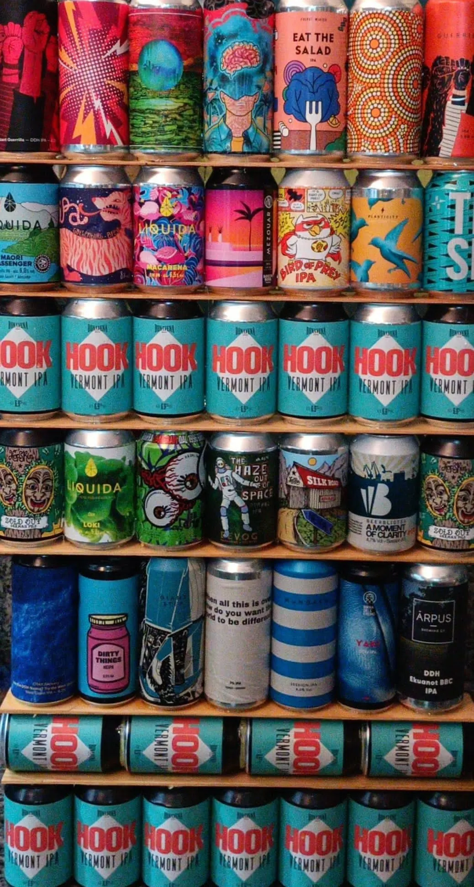
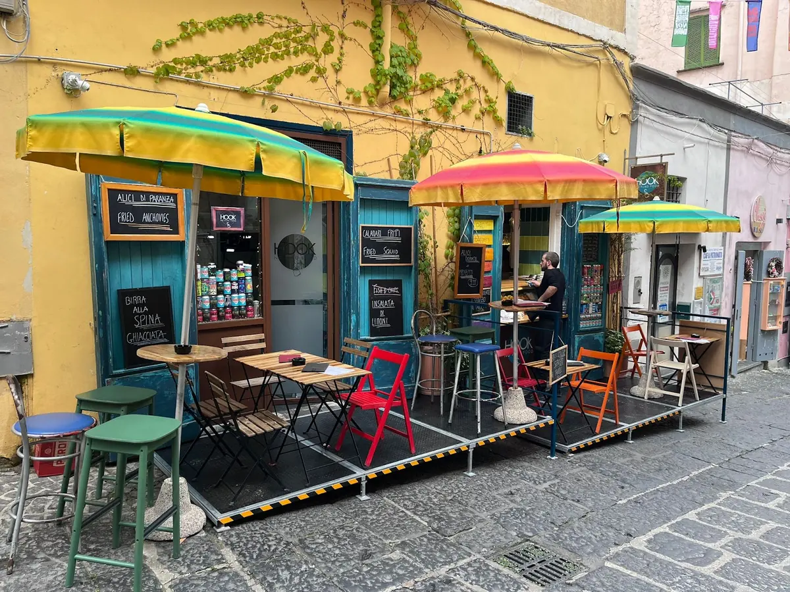

Birre artigianali da tutto il mondo, sugli scaffali.

Bistrò e cibo da asporto · Procida
HookNo Flag Food
Bistrò e cibo da asporto a Procida, in Via Vittorio Emanuele, 9/11.
4,9561 recensioni GoogleVia Vittorio Emanuele, 9/11, 80079 Procida, NA

I tavolini con gli ombrelloni colorati, a Procida.
Via Vittorio Emanuele, 9/11, Procida. 4,9 su 5 su Google, 561 recensioni.
Recensioni
Cosa dicono i clienti
4,9 su 5 · 561 recensioni su Google. Qui sotto alcune, riportate senza modifiche (i nomi sono abbreviati).
★★★★★
A Procida ci sono posti che funzionano perché non cercano di essere qualcosa di diverso da ciò che sono. Hook – No Flag Food è uno di questi: piccolo, colorato, informale, con un’identità chiara e una proposta perfettamente adatta all’isola. Non è il classico ristorante con servizio al tavolo e menu strutturato, ma un locale in stile street food di mare, pensato per mangiare qualcosa di sfizioso, veloce e ben fatto, senza complicazioni.
Già dall’esterno il posto ha personalità: colori vivaci, atmosfera rilassata, richiami marinari e una posizione molto piacevole, con affaccio verso il porto. È il tipo di locale che ti invita a fermarti senza troppi programmi, magari per un pranzo informale o una pausa tra una passeggiata e l’altra.
La cucina ruota attorno a fritti, pesce, chips homemade e piccoli piatti da condividere. Una proposta semplice, ma coerente, che secondo me è uno dei suoi punti di forza: non un menu infinito e dispersivo, ma una selezione giusta, centrata e adatta al contesto. Si capisce subito l’idea: pochi fronzoli, prodotti riconoscibili, esecuzione diretta.
Noi abbiamo assaggiato diverse cose e l’esperienza è stata molto positiva. Il fritto era asciutto, saporito e piacevole, senza risultare pesante. Menzione d’onore per calamari, acciughe fritte e frittatine, tutto davvero molto buono: i calamari teneri e ben fritti, le acciughe gustose e intense al punto giusto, le frittatine golose e perfette per accompagnare il resto. Sono preparazioni semplici, ma quando vengono fatte bene fanno esattamente quello che devono fare: ti fanno venire voglia di continuare ad assaggiare.
Buona anche la varietà generale. Si può comporre facilmente un pranzo sfizioso, condividendo più piatti senza appesantirsi troppo. L’unica piccola nota meno convincente riguarda le chips, che abbiamo trovato un po’ secche rispetto al resto. Nulla di grave, perché nel complesso la qualità c’è e il livello rimane più che buono, ma è il dettaglio che migliorerei.
Altro aspetto positivo: i prezzi. Considerando Procida, la posizione e la qualità riscontrata, non li ho trovati esagerati. Anzi, il rapporto qualità/prezzo è uno dei motivi per cui il locale merita una sosta. Si mangia bene, si spende il giusto e si vive un’esperienza leggera, informale, ma comunque curata.
Nel complesso, Hook – No Flag Food è una delle idee più riuscite provate a Procida. Un format intelligente, ben inserito nel contesto dell’isola, con una cucina semplice ma eseguita bene e un’identità visiva piacevole. Non è un posto da cercare per una cena lunga e tradizionale, ma per uno street food di mare fatto come si deve è assolutamente consigliato.
Ci tornerei volentieri.
★★★★★
Sono stato Giovedì 10 Settembre 2026, ero a Procida per visitarla e volevamo mangiare qualcosa, eravamo in 4 e non volevamo spendere troppo e non volevamo andare nei soliti ristoranti da turisti, cosi abbiamo scelto HOOK un carinissimo localino a due passi dal porto, pochissimi tavolini e tanto amore,pesce freschissimo, alici fritte e patatine il top, alici marinate squisite, e frittatina di pasta al gusto mojto veramente buonissima, non l'vevo mai mangiata cosi, e poi preso una pasta al forno anche quella buonissima, il ragazzo al bancone molto simpatico.Non effettuano servizio al tavolo, quindi ordini, paghi e poi lo porti tu, a fine pasto gli ho sparecchiato il tavolo perché per me è giusto cosi.
Prezzi Giusti e qualità e quantità altissima.
Complimenti ragazzi se mai dovessi tornare a Procida verrò da voi.
★★★★★
Durante una breve gita sull'isola di Procida abbiamo avuto il piacere di incontrare i gestori dello street food. Due ragazzi eccezionali così come i loro piatti. Tutto super, qualità top. Fatevi consigliare da loro ma non potete non prendere le alici marinate così come quelle fritte ed i calamari. Da mangiare anche l'insalata di limoni. Se torneremo a Procida sarà il nostro punto di riferimento.
★★★★★
Cibo ottimo. Buonissime le alici. I fritti riempiono e sono abbondanti, non abbiamo sentito la necessità di prendere un panino.. che avevano comunque un bellissimo aspetto!
Ragazzo gentile, anche se formalmente non fanno servizio al tavolo, lui ti aiuta volentieri col portare i piatti al tavolo. Questi ultimi sono pochissimi quindi dovete aspettare che si liberi uno per accomodarvi. In alternativa potete portare tutto via e sedervi su una panchina al porto. Prezzi a mio avviso giusti.
★★★★★
Nonostante tutte le buonissime frittatine di pasta vegane assaggiate a Napoli non siamo riusciti a dimenticarci quella di Hook…Poi la location è davvero magica, il ragazzo gentilissimo, da vegani mangiare a Procida non è facilissimo eppure abbiamo trovato un piccolo angolo di paradiso❤️
Orari e dove siamo
Vieni a trovarci
| Lunedì | 10:30–17:00 |
|---|---|
| Martedì | 10:30–17:00 |
| Mercoledì | Chiuso |
| Giovedì | 10:30–17:00 |
| Venerdì | 10:30–17:30 |
| Sabato | 10:30–17:30 |
| Domenica | 10:30–17:30 |
Hook - No Flag Food
Via Vittorio Emanuele, 9/11, 80079 Procida, NA
081 3994 224
Orari della scheda Google: nei festivi possono cambiare, chiamateci per conferma.
Via Vittorio Emanuele, 9/11, 80079 Procida, NA
Contatti
Scrivici
Un messaggio su WhatsApp, o una telefonata: vi risponde Hook.